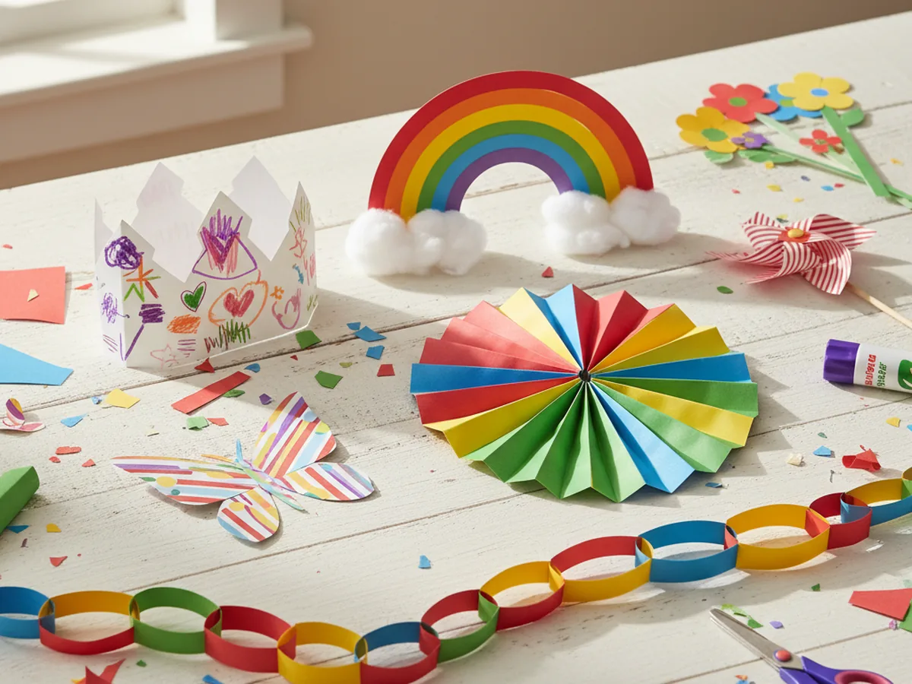
Paper is honestly one of the best craft materials you can keep at home. It is affordable, easy to find, and it can become almost anything your child imagines. These children's paper craft ideas were chosen because they are genuinely simple, low-mess, and satisfying for kids of all ages. Whether you have 20 minutes on a rainy afternoon or a whole slow Saturday morning together, there is something on this list for you. 🎨
Some of these children's paper craft ideas require nothing more than a sheet of paper and a pair of scissors. Others add a little glue, some markers, or googly eyes for extra fun. All of them are beginner-friendly and designed to end with a result your child will feel genuinely proud of.
What You'll Need
These basic supplies will cover you for nearly every paper craft idea on this list, so you can craft whenever the mood strikes without hunting for missing supplies. ✂️
- Colored construction paper, a large assorted pack gives you every color you need for any project.
- Child-safe scissors, blunt-tip training scissors are safe and easy for little hands to use.
- Glue sticks, disappearing purple formula makes it easy to see where the glue has been applied.
- Washable markers, bright colors that wipe cleanly off skin and most surfaces.
- Googly eyes, assorted sizes add instant personality to animals and characters.
- Clear tape or a stapler, handy for joining paper edges on 3D and looped projects.
- Pencil, useful for tracing shapes before cutting.
20 Children's Paper Craft Ideas to Try Together
1. Folded Paper Fan
This classic children's paper craft never gets old. Take a sheet of colorful paper, fold it accordion-style from one end to the other, then pinch and tape the bottom to hold the fan shape open. Kids love decorating the paper with stripes or polka dots before folding, and they feel a genuine little thrill the moment the fan snaps open. It is a wonderful first project for toddlers learning to fold with guidance.
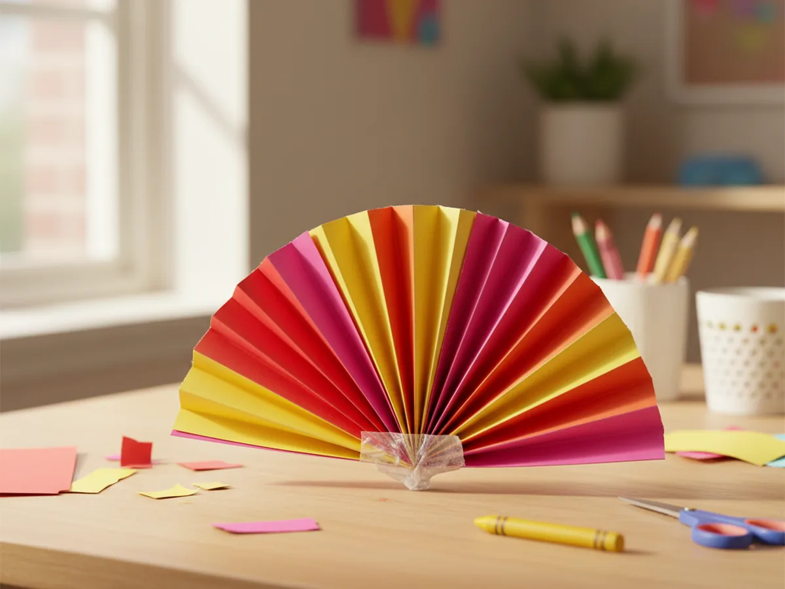
2. Paper Crown
Every child wants to be royalty for a day, and a paper crown takes only a few minutes to make. Cut a strip of paper long enough to fit around your child's head, then cut triangular points along the top edge and tape the ends together. Let your child go wild decorating it with markers, foam stickers, or glued-on paper jewels before crowning themselves. This is one of those paper craft ideas for children that doubles as a prop for imaginative play all afternoon.
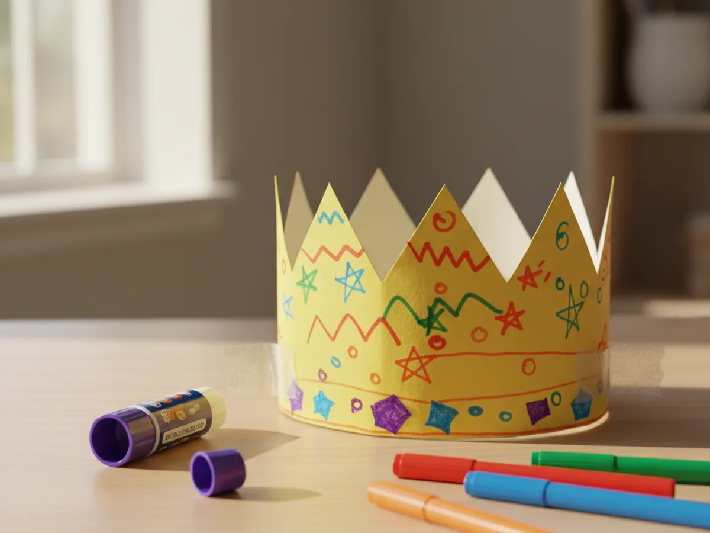
3. Paper Butterfly
Draw and cut two large wing shapes from colorful paper, then fold a thin strip of paper accordion-style for the body and glue the wings to either side. Add antennae made from thin twisted paper strips and let your child draw patterns on the wings with markers. This sweet project looks beautiful hanging from a window or pinned to a bulletin board, and it is one of the most popular children's paper craft ideas for springtime.
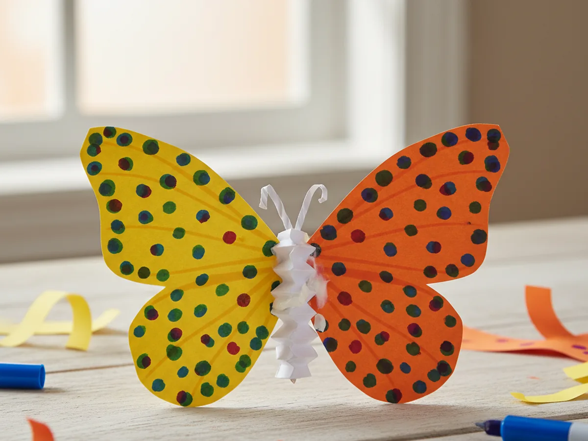
4. Paper Rainbow
Cut strips of paper in red, orange, yellow, green, blue, and purple, then layer and glue them into a rainbow arc shape on a white background. Add cotton ball clouds at each end for a fluffy finishing touch. This is a beautifully simple paper craft idea for children that younger kids find very satisfying because the rainbow comes together quickly and looks bright and cheerful on any wall.
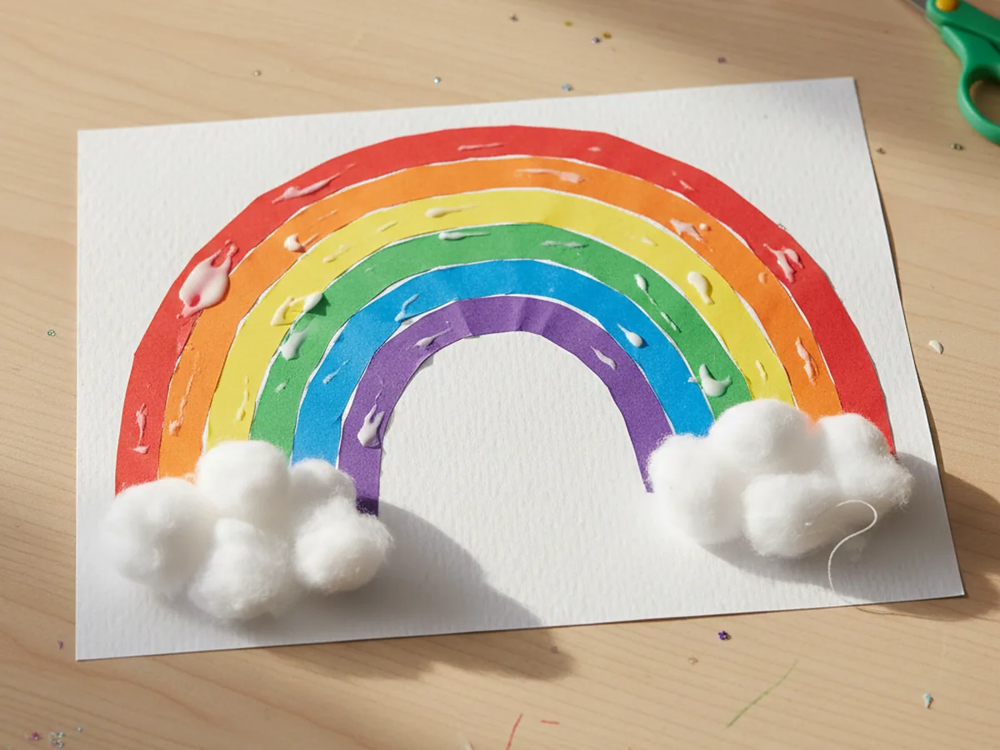
5. Paper Sunflower
Cut a large yellow circle for the center and long petal shapes from bright yellow paper, then glue the petals around the circle. Add a green paper stem and leaf shapes to complete the flower. This is a lovely children's paper craft that works beautifully as a gift for grandparents or as wall art in a child's bedroom. Older kids can add detail by drawing seeds or textures on the center circle.
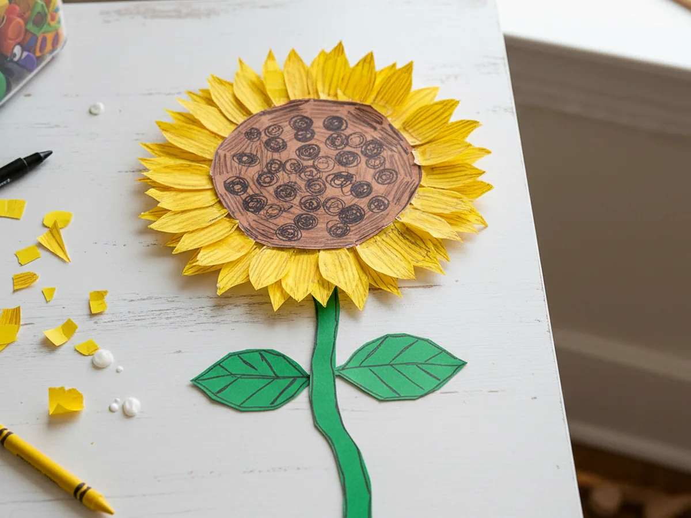
6. Paper Bird
Fold a square sheet of paper into a simple origami bird shape, or cut and glue paper pieces together to make a colorful bird with a beak, wings, and tail feathers. Googly eyes turn it into an instant character kids will love. This is a fun and flexible paper craft idea that works for a wide age range, and you can make a whole flock in different colors to hang as a mobile.
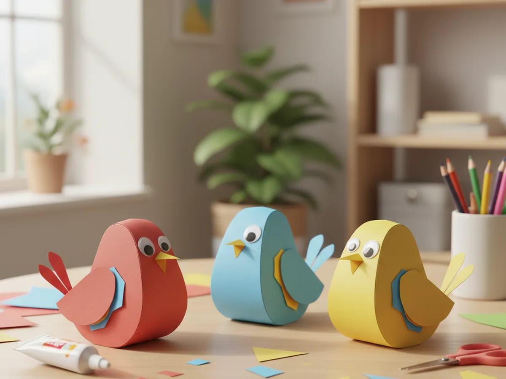
7. Paper Pinwheel
Cut a square of paper diagonally from each corner toward the center, fold every other point to the middle, and secure with a brad fastener through the center. Attach the brad to a wooden stick or pencil and watch it spin in the breeze. This is one of those children's paper craft ideas with a payoff that kids absolutely love because they made something that actually moves and plays in the wind.
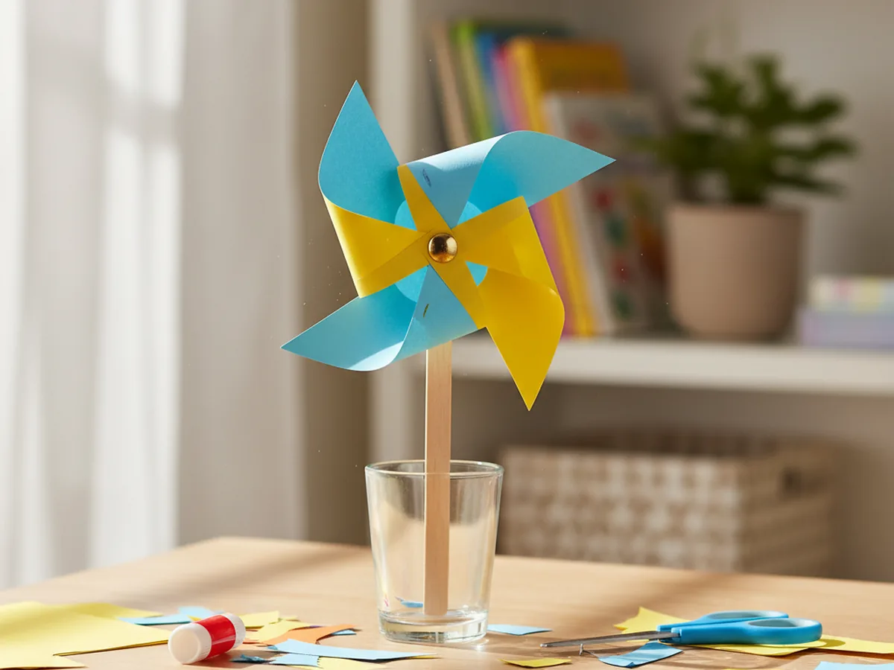
8. Paper Lantern
Fold a rectangle of paper in half lengthwise and cut slits along the folded edge, leaving a margin at the top and bottom uncut. Unfold the paper, curve it into a cylinder, and tape the short edges together to form a lantern shape. These look absolutely gorgeous strung together on a piece of string, and they make a wonderful decorating project for birthdays or family celebrations.
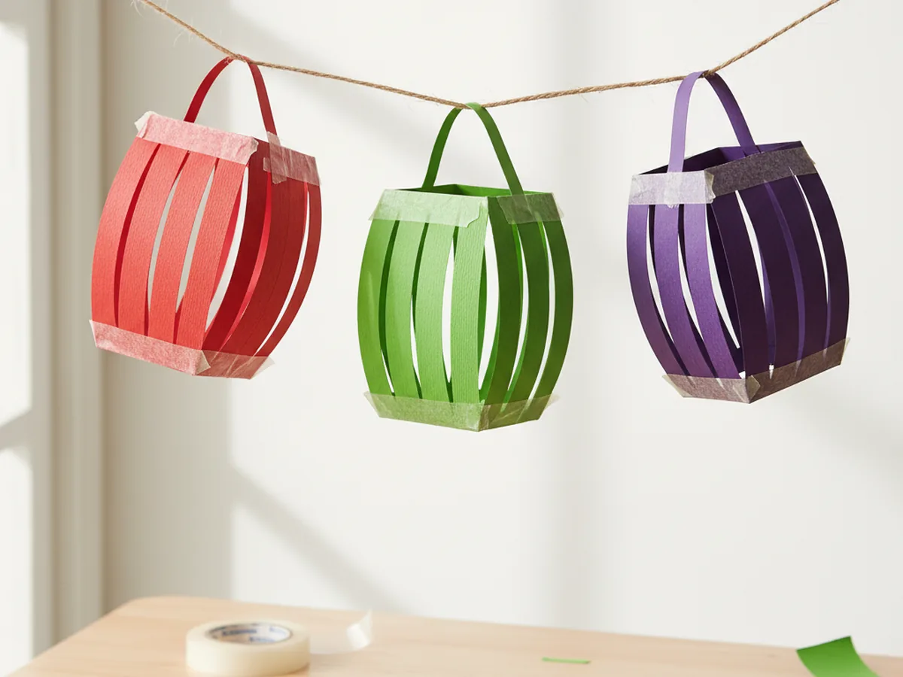
9. Paper Bookmarks
Cut strips of paper or cardstock into bookmark shapes and let your child decorate them with markers, stickers, or stamped designs. Fold the top into a small corner pocket if you want a bookmark that clips over the page without a string. This is a wonderfully practical children's paper craft that makes a sweet homemade gift, especially for teachers, grandparents, or anyone who loves to read.
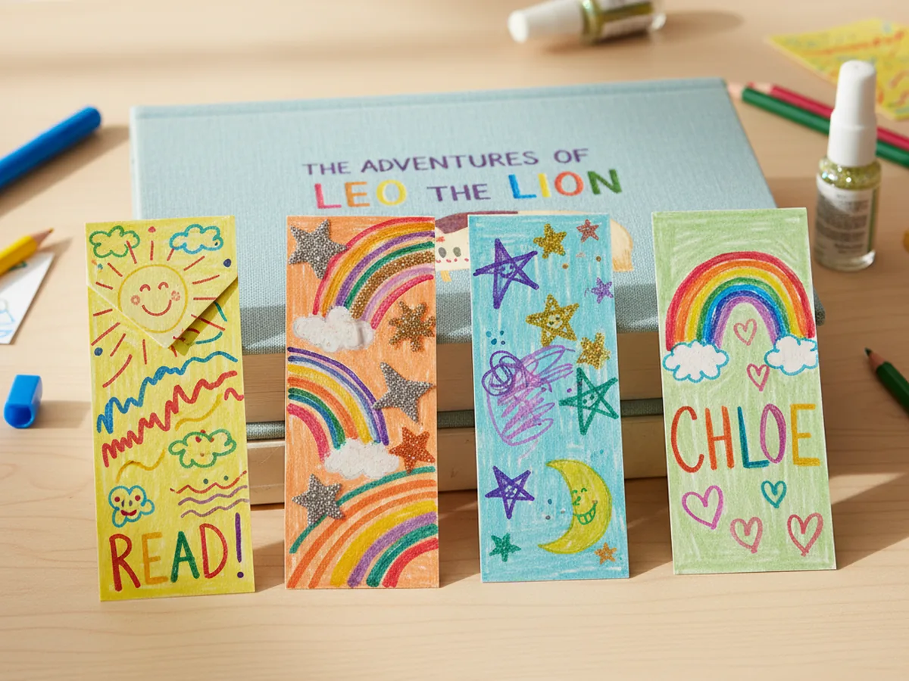
10. Paper Weaving
Cut a sheet of paper with parallel slits across it, leaving a border intact, then weave strips of differently colored paper in and out through the slits. The result is a cheerful woven pattern that looks much more impressive than the effort involved. Paper weaving is a classic children's craft activity that builds fine motor skills in a very satisfying way, and even young children can learn the over-and-under pattern quickly with a little guidance.
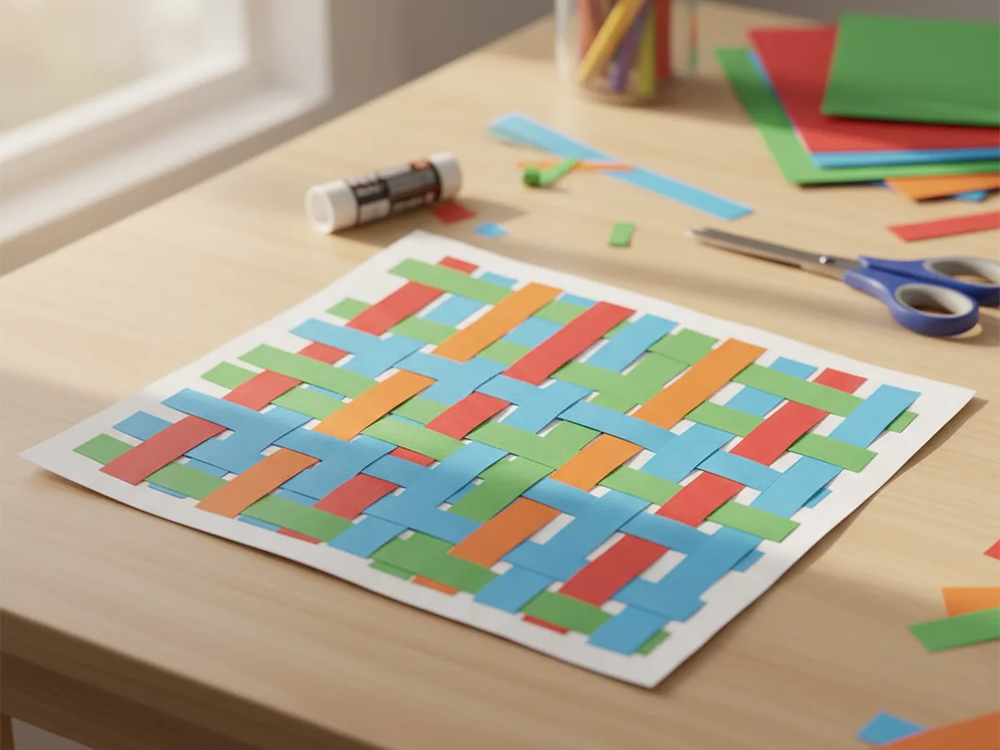
11. Paper Chain Garland
Loop and glue strips of colored paper into interlocking rings to form a chain garland you can hang anywhere in the house. Let your child choose the colors and decide how long to make it. This is one of the most classic children's paper craft ideas and for good reason: it is endlessly repeatable, very easy for little ones, and the result is always festive and cheerful whether you hang it at a party or just for fun.
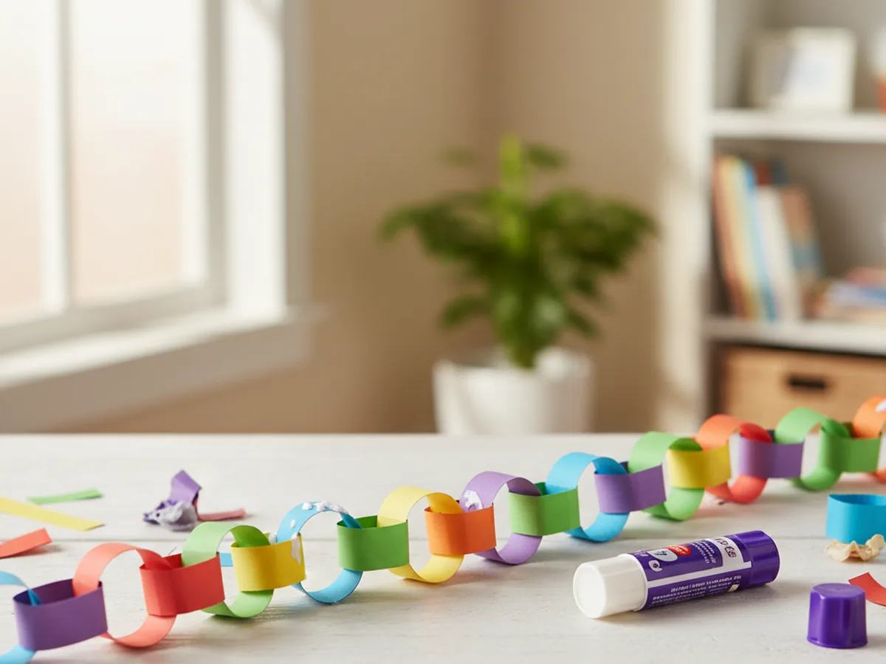
12. Paper Spiral Snake
Draw a large spiral on a sheet of paper starting from the outside edge and working inward, then carefully cut along the line to reveal a hanging spiral snake. Color it in bold stripes or patterns and add a tiny forked tongue cut from red paper at one end. Hang it from the ceiling or in a doorway and watch kids delight in how it slowly spins and sways in the breeze. 🐍
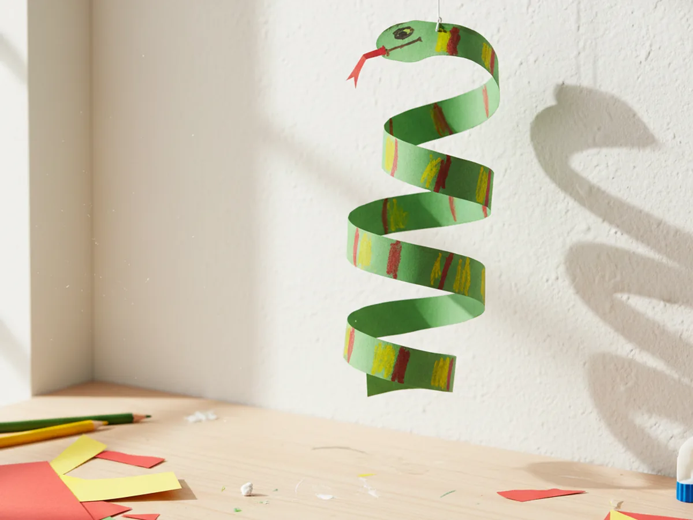
13. Paper Flower Bouquet
Curl and fold squares of colored paper into simple flower shapes, then glue each onto a green paper stem. Gather a handful together for a bouquet that stays fresh forever and never needs water. This is one of the sweetest paper craft ideas for children to make for a parent or grandparent, and it looks genuinely beautiful displayed in a small vase or tied together with a ribbon.
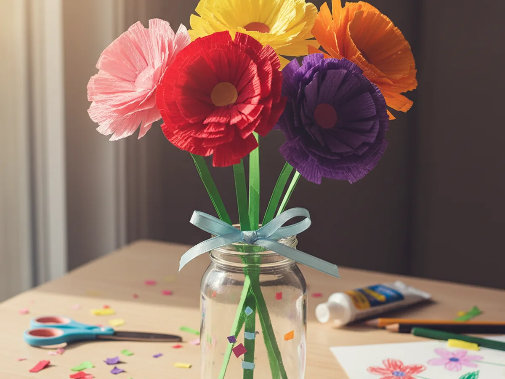
14. Paper Kite
Cut a kite diamond shape from a large sheet of paper, decorate it with bold patterns and colors, then attach a crepe paper or ribbon tail. Tape a short stick across the center for structure, punch a small hole at the top, and tie on a long piece of string. While this is more of a display kite than a flying one, kids absolutely love taking it outside and running with the string trailing behind them.
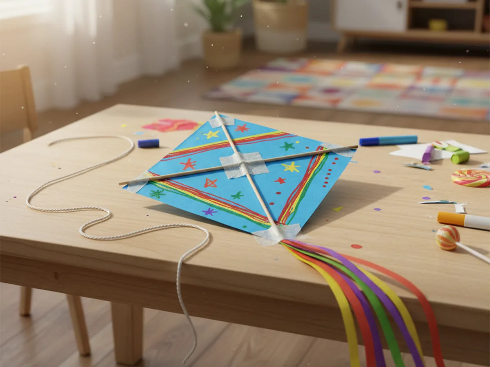
15. Torn Paper Mosaic
Tear colorful paper into small irregular pieces and glue them onto a simple outline drawn on white paper, such as a heart, a sun, or an animal silhouette. The torn edges give the mosaic a beautiful organic texture that glued-down cut pieces never achieve. This is one of those quiet, focused children's paper craft ideas that even very young toddlers can take part in because tearing paper is a skill they already love to practice.
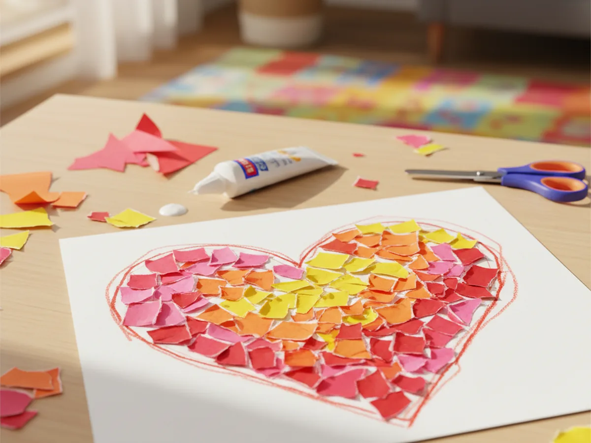
16. Paper Bunny
Cut two long ear shapes and a round body from white or pastel paper, then glue them together and add a cotton ball tail, a small pink nose, and googly eyes to bring the bunny to life. Let your child draw on the face details and add little paws for extra personality. This is one of the easiest and cutest paper craft ideas for young children, and it works beautifully as a spring or Easter decoration.
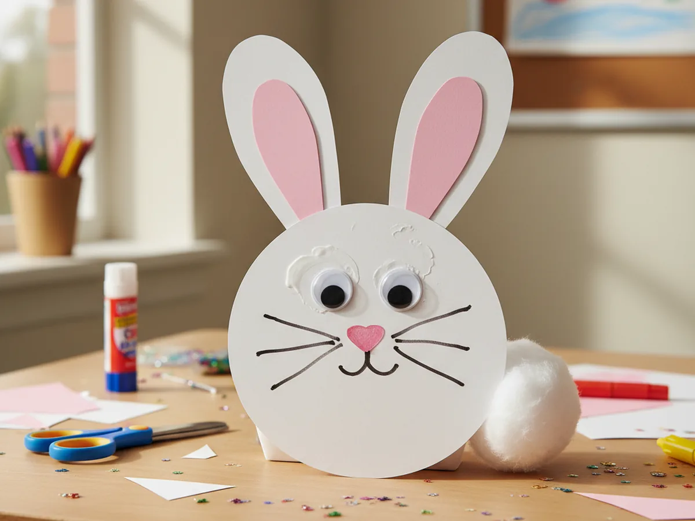
17. Paper Windmill
This is similar to a pinwheel but uses a folded square of paper to create four vane shapes that catch the air beautifully. Attach it to a drinking straw or craft stick with a brad fastener and blow gently to watch it spin. Kids are completely captivated by things they can make that actually move, and this simple children's paper craft delivers that payoff every single time without complicated materials or instructions.
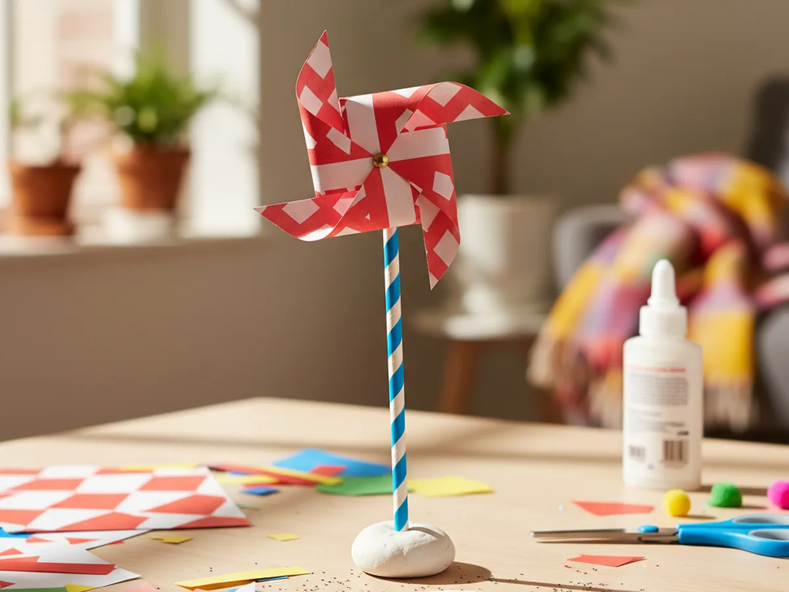
18. Paper Heart Mobile
Cut hearts in several sizes from different colored papers, then string them in graduated order from largest at the bottom to smallest at the top. Tie the strings to a stick or a short piece of dowel and hang the finished mobile where it will catch the light and sway gently. This is one of the prettiest children's paper craft ideas in this list and makes a wonderful homemade gift for Mother's Day or Valentine's Day.
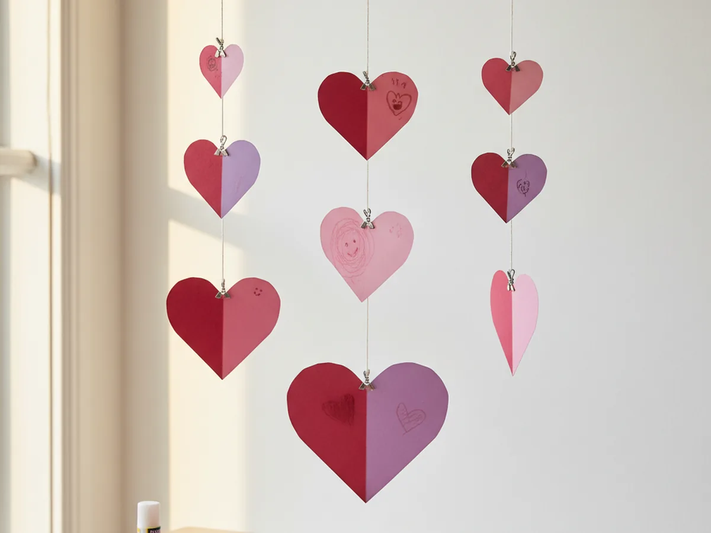
19. Paper Turtle
Draw and cut an oval body and four rounded leg shapes from green paper, then cut a slightly smaller oval in a contrasting green for the shell and draw a patchwork pattern across it with markers. Glue the legs and shell to the body, add googly eyes, and your turtle is complete. This is a delightful and hands-on paper craft idea for children that works for a wide range of ages and results in a sweet little animal they will want to keep.
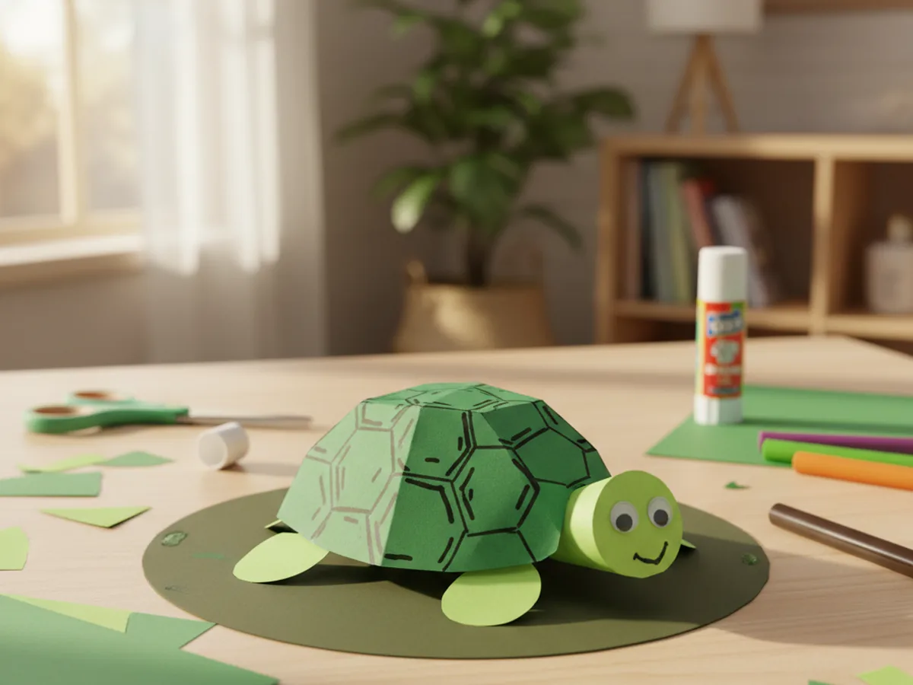
20. Paper Star
Fold and cut a five-pointed star from a square of paper using the classic single-cut origami method: fold the paper, make a few precise folds, and one snip reveals a perfect star shape. Older children can make several in different sizes and layer them together as wall art. This is one of those incredibly satisfying children's paper crafts where the result feels almost magical considering how little effort goes into it. 🌟
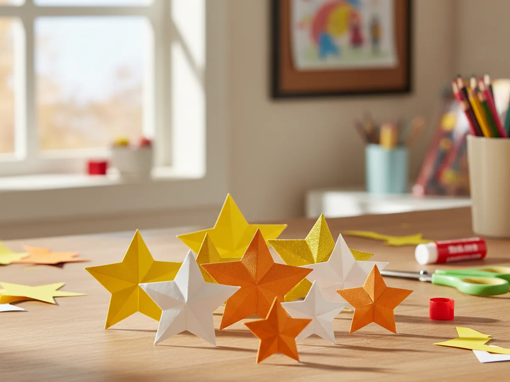
Final Thoughts
There is something really special about sitting down with a stack of paper and watching your child turn it into something they are proud of. These children's paper craft ideas are designed to feel easy and enjoyable from start to finish, so that the time you spend together feels warm and relaxed rather than stressful. You do not need a perfectly organized craft room or expensive supplies to make beautiful things together.
Pick one idea that feels right for today, grab a few sheets of paper, and enjoy the process. The finished craft is lovely, but the moment you share making it is the part that stays with your child longest.
More Crafts You'll Love
If you enjoyed these paper craft ideas, here are a few more easy projects to try with your kids.
Happy crafting, and enjoy every messy, colorful, creative moment together. 💛